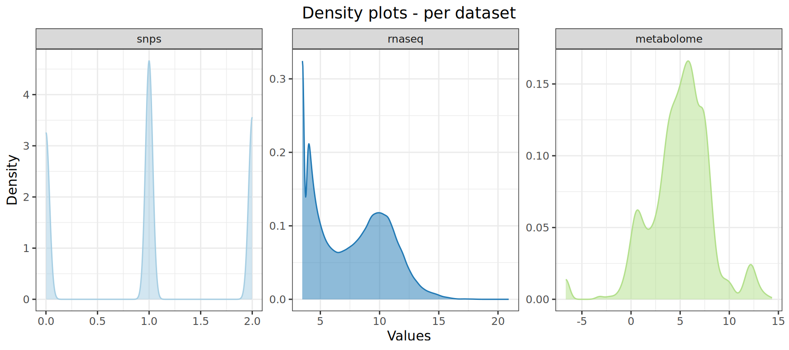
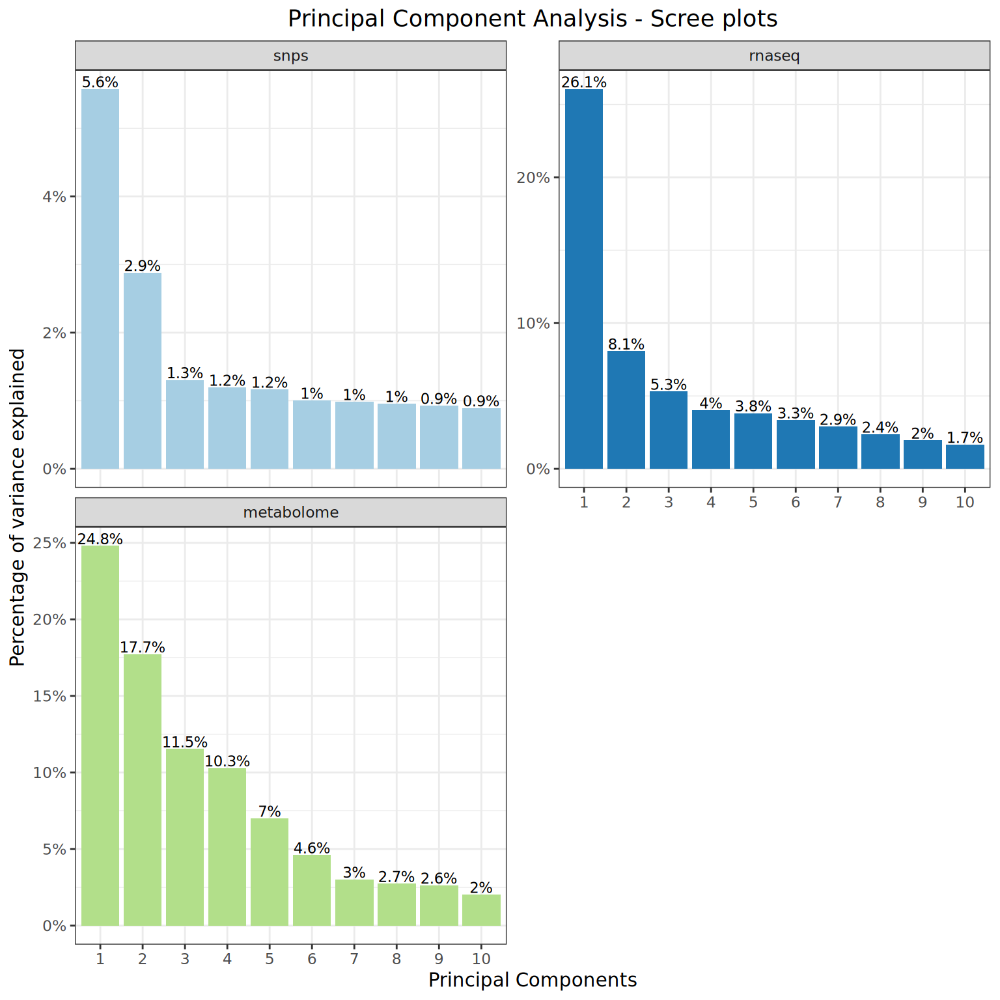
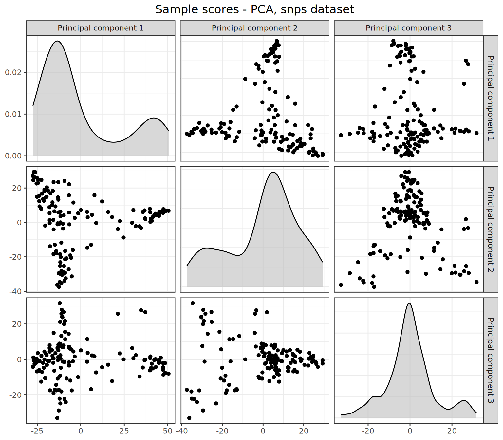
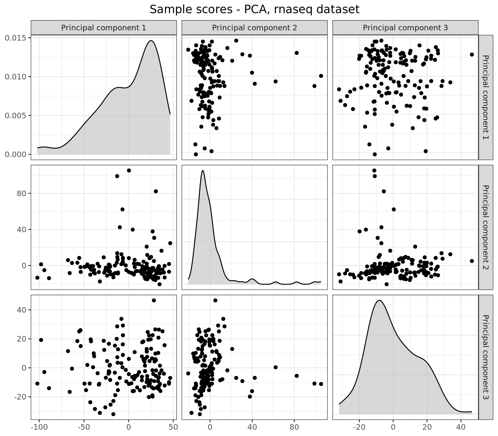
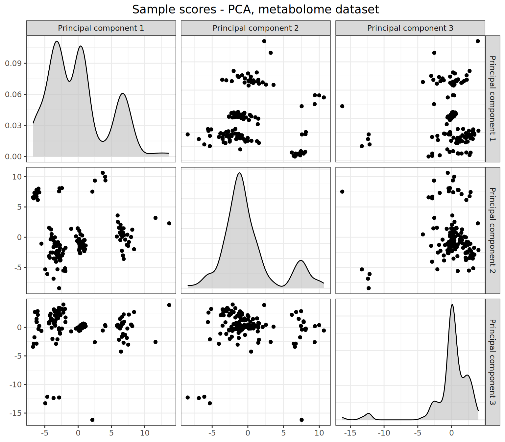
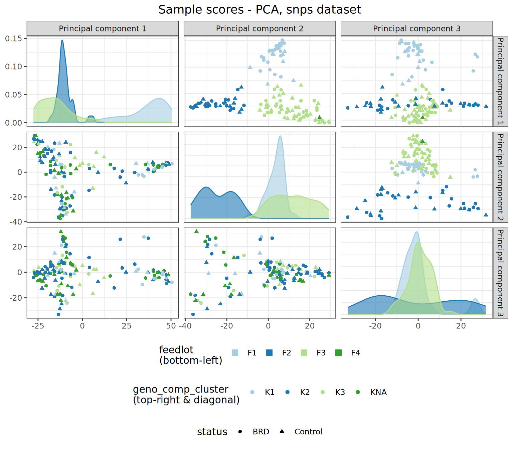

6 Data pre-processing
Once each omics dataset has been imported into R with associated metadata and combined into a MultiDataSet object, there is a number of pre-processing steps that should be considered. In this chapter, we will show how to apply different transformations to the datasets, as well as how to run a PCA on each dataset and impute missing values if needed.
As a reminder, here is what the _targets.R script should look like so far:
_targets.R script
6.1 Datasets transformations
After inspection of the density plots for the different datasets (see Section 4.3), it might be necessary to normalise or transform some or all datasets. This is necessary to mitigate the mean-variance trend that occurs in RNAseq data, for example, or simply to bring the different features to a comparable scale. Transformation here refers to applying a function to each feature (i.e. each row) within a dataset that will transform the measurement values for the feature.
moiraine implements several options to transform an omics dataset:
Variance Stabilising Normalisation (VSN) through the
vsnpackage – recommended for metabolomics datasets or other continuous datasets with a strong mean-variance trend;Variance Stabilising Transformation (VST) through the
DESeq2package – recommended for RNAseq data or any raw read count-type data;Automatic selection of the best normalisation method for each feature through the
bestNormalizepackage – recommended for phenotype data, and when the number of features is small (note that the selection of the normalisation method is done independently for each feature, so the same transformation might not be applied to all features);A selection of common normalisation methods through the
bestNormalizepackage, including center/scale, log, exponential, square-root, arcsinh, Box Cox, Yeo-Johnson and ordered quantile transformations (see details in the bestNormalize vignette) – recommended when applying the same transformation to all features, e.g. log2 transformation or centering.
6.1.1 Transforming a single dataset
The transformation of one dataset is done through the transform_dataset() function, which takes as input a MultiDataSet object, the name of the dataset to transform, and the name of the transformation to be applied, which should be one of vsn, vst-deseq2, best-normalize-auto or best-normalize-manual. For the latter, the name of the normalisation method from the BestNormalize package to use must also be supplied through the method argument.
The return_multidataset argument determines whether a MultiDataSet object with the corresponding dataset transformed should be returned. If it is set to FALSE, the function will instead return a list with the transformed dataset as a matrix as well as other useful information returned by the transformation function applied. It is possible to only return the transformed matrix, by setting return_matrix_only to TRUE. This can be useful to quickly assess the effects of the transformation outside of the analysis pipeline.
For example, we can apply the Variance Stabilising Transformation to the transcriptomics dataset:
tar_load(mo_set_de)
rnaseq_vst <- transform_dataset(
mo_set_de,
"rnaseq",
"vst-deseq2",
return_multidataset = FALSE
)
#> Applying Variance Stabilising Transformation (DESeq2) to rnaseq dataset.
#> converting counts to integer modeThe function returns a list, with the transformed dataset as matrix in the transformed_data element. Information generated during the transformation by the DESeq2 package is stored in the info_transformation element. The name of the transformation applied is stored in the transformation element:
names(rnaseq_vst)
#> [1] "transformed_data" "info_transformation" "transformation"
rnaseq_vst$transformed_data[1:5, 1:5]
#> R9497 R5969 R5327 R5979 R9504
#> ENSBTAG00000000005 10.357314 11.289047 12.070536 10.201227 10.251942
#> ENSBTAG00000000008 4.836495 4.937948 4.375764 4.986154 5.710581
#> ENSBTAG00000000009 3.486141 4.054636 4.983434 3.486141 3.486141
#> ENSBTAG00000000010 12.216690 11.937084 12.079359 11.383360 11.897780
#> ENSBTAG00000000011 3.486141 4.054636 4.005139 3.979732 3.486141
rnaseq_vst$info_transformation
#> class: DESeqTransform
#> dim: 20335 143
#> metadata(1): version
#> assays(1): ''
#> rownames(20335): ENSBTAG00000000005 ENSBTAG00000000008 ...
#> ENSBTAG00000055312 ENSBTAG00000055314
#> rowData names(6): baseMean baseVar ... dispGeneIter dispFit
#> colnames(143): R9497 R5969 ... Y9747 Y9816
#> colData names(1): sizeFactor
rnaseq_vst$transformation
#> [1] "vst-deseq2"If we instead want to apply a log2 transformation to the dataset, we will use the best-normalize-manual transformation option instead, and we have to specify the transformation to use through the method argument; in our case, we will use the log_x method.
The bestNormalize::log_x() function uses by default a log base 10, but this can be changed by passing the b argument (the log base to use) to 2. We will also set a (the offset to use before log-transformation) to 0.5 – see the bestNormalize::log_x() function help for information about the parameters. By default, all bestNormalize functions standardise the transformed datasets, which we can prevent by setting standardize = FALSE:
rnaseq_log2 <- transform_dataset(
mo_set_de,
"rnaseq",
"best-normalize-manual",
method = "log_x",
return_multidataset = TRUE,
## Arguments passed to BestNormalize::log_x():
a = 0.5,
b = 2,
standardize = FALSE
)
#> Applying log_x transformation (bestNormalize) to rnaseq dataset.In that case, we asked the function to return a MultiDataSet object, in which the rnaseq dataset has been transformed:
rnaseq_log2
#> Object of class 'MultiDataSet'
#> . assayData: 3 elements
#> . snps: 23036 features, 139 samples
#> . rnaseq: 20335 features, 143 samples
#> . metabolome: 55 features, 139 samples
#> . featureData:
#> . snps: 23036 rows, 13 cols (feature_id, ..., p_value)
#> . rnaseq: 20335 rows, 15 cols (feature_id, ..., de_signif)
#> . metabolome: 55 rows, 16 cols (feature_id, ..., de_signif)
#> . rowRanges:
#> . snps: YES
#> . rnaseq: YES
#> . metabolome: NO
#> . phenoData:
#> . snps: 139 samples, 10 cols (id, ..., geno_comp_3)
#> . rnaseq: 143 samples, 10 cols (id, ..., geno_comp_3)
#> . metabolome: 139 samples, 10 cols (id, ..., geno_comp_3)
get_dataset_matrix(rnaseq_log2, "rnaseq")[1:5, 1:5]
#> R9497 R5969 R5327 R5979 R9504
#> ENSBTAG00000000005 9.518653 10.4589192 11.5115056 9.7690113 9.532356
#> ENSBTAG00000000008 2.700440 2.9068906 1.8073549 3.3923174 4.357552
#> ENSBTAG00000000009 -1.000000 0.5849625 3.2479275 -1.0000000 -1.000000
#> ENSBTAG00000000010 11.395266 11.1114617 11.5203731 10.9661449 11.195680
#> ENSBTAG00000000011 -1.000000 0.5849625 0.5849625 0.5849625 -1.0000006.1.2 Transformation target factory
The target factory function transformation_datasets_factory() provides a wrapper to apply (potentially different) transformations to several datasets at once. The function takes as input the MultiDataSet object as well as a named character vector, in which each element corresponds to a transformation that should be applied to a specific dataset. If a dataset is not present in the transformation vector, it will not be transformed (but it will still be present in the resulting MultiDataSet object).
Here, we would like to apply Variance Stabilising Transformation to the transcriptomics dataset, and a log2 transformation to the metabolomics dataset. Note that the VST and VSN transformations are very close to the log2 transformation, especially for features with high means.
transformation_datasets_factory(
mo_set_de,
c("rnaseq" = "vst-deseq2",
"metabolome" = "best-normalize-manual"),
methods = c("metabolome" = "log_x"),
a = 0.01,
b = 2,
standardize = FALSE,
transformed_data_name = "mo_set_transformed"
)The transformation_datasets_factory() function works as follows:
- It creates a grouped tibble listing the transformation to apply to each dataset, stored in the
transformations_spectarget;
tar_read(transformations_spec)
#> # A tibble: 2 × 4
#> dsn transf meth tar_group
#> <chr> <chr> <chr> <int>
#> 1 rnaseq vst-deseq2 <NA> 2
#> 2 metabolome best-normalize-manual log_x 1- It performs the required transformation on each dataset via dynamic branching. This is done through a call to the
transform_dataset()function. The transformed datasets are stored in a list, in thetransformations_runs_listtarget. Note that by default the function will store all details of the transformations, which can be useful for later inspection, but can be memory-intensive. It is possible to only store the transformed datasets instead, by setting thereturn_matrix_onlyargument toTRUEin thetransformation_datasets_factory()call.
tar_load(transformations_runs_list)
names(transformations_runs_list)
#> [1] "transformations_runs_list_7a466037" "transformations_runs_list_a1c8db41"
map_chr(transformations_runs_list, attr, "dataset_name")
#> transformations_runs_list_7a466037 transformations_runs_list_a1c8db41
#> "metabolome" "rnaseq"
transformations_runs_list[["transformations_runs_list_a1c8db41"]] |> names()
#> [1] "transformed_data" "info_transformation" "transformation"- It creates a new
MultiDataSetobject, with the transformed version of the datasets. By default, this newMultiDataSetobject is stored in a target calledtransformed_set, but a different name can be specified via thetransformed_data_nameargument (here we called itmo_set_transformed).
tar_load(mo_set_transformed)
mo_set_transformed
#> Object of class 'MultiDataSet'
#> . assayData: 3 elements
#> . snps: 23036 features, 139 samples
#> . rnaseq: 20335 features, 143 samples
#> . metabolome: 55 features, 139 samples
#> . featureData:
#> . snps: 23036 rows, 13 cols (feature_id, ..., p_value)
#> . rnaseq: 20335 rows, 15 cols (feature_id, ..., de_signif)
#> . metabolome: 55 rows, 16 cols (feature_id, ..., de_signif)
#> . rowRanges:
#> . snps: YES
#> . rnaseq: YES
#> . metabolome: NO
#> . phenoData:
#> . snps: 139 samples, 10 cols (id, ..., geno_comp_3)
#> . rnaseq: 143 samples, 10 cols (id, ..., geno_comp_3)
#> . metabolome: 139 samples, 10 cols (id, ..., geno_comp_3)
get_dataset_matrix(mo_set_de, "metabolome")[1:5, 1:3]
#> R21 Y3660 Y3243
#> HMDB00001 9.1 9.7 9.3
#> HMDB00008 58.2 22.8 9.1
#> HMDB00042 403.0 392.0 606.0
#> HMDB00043 172.6 163.1 165.2
#> HMDB00060 0.7 1.5 1.4
get_dataset_matrix(mo_set_de, "metabolome")[1:5, 1:3]
#> R21 Y3660 Y3243
#> HMDB00001 9.1 9.7 9.3
#> HMDB00008 58.2 22.8 9.1
#> HMDB00042 403.0 392.0 606.0
#> HMDB00043 172.6 163.1 165.2
#> HMDB00060 0.7 1.5 1.4We can assess the effect of the transformations by generating density and mean-sd plots for the transformed datasets:
plot_density_data(
mo_set_transformed,
combined = FALSE,
scales = "free"
)
Note how the relationship between features mean and standard deviation has been reduced in both transformed datasets:
plot_meansd_data(mo_set_transformed)
Finally, it can be useful to summarise which transformations have been applied to the datasets, for example when creating a report. The function get_table_transformation() is here for that. It takes as an input the transformations_runs_list target generated by transformation_datasets_factory(), and returns a tibble indicating the transformation applied to each dataset:
get_table_transformations(transformations_runs_list)
#> # A tibble: 2 × 2
#> Dataset Transformation
#> <chr> <chr>
#> 1 metabolome Non-Standardized Log_2(x + 0.01) transformation (bestNormalize)
#> 2 rnaseq Variance Stabilising Transformation (DESeq2)6.2 Running a PCA on each dataset
It is always best practice to run some exploratory analysis on a dataset prior to running analyses. This is largely outside the scope of this package, and we assume that any input dataset has been properly assessed before turning to the integration pipeline. However, running a Principal Component Analysis (PCA) on each of the omics datasets within the integration pipeline serves two purposes:
as a last check to ensure that there are no obvious batch effects or problematic samples that should be addressed,
as a missing data imputation method.
The moiraine package relies on the Bioconductor pcaMethods package to perform the PCA. In particular, the pcaMethods package implements a NIPALS (non-linear iterative partial least squares) method for PCA, which allows for missing values in the input dataset, and imputes missing values based on the results of the PCA.
6.2.1 Running the PCAs
The pca_complete_data_factory() function uses dynamic branching to perform a PCA on each omics dataset within a MultiDataSet object. It takes as input the MultiDataSet object (in our case, mo_set_transformed), and, optionally, the names of the datasets on which a PCA should be run. This is useful if one dataset is very large and has no missing values, and we want to avoid running a PCA on it. It then proceeds as follows:
It creates a target called
dataset_names_pca, which stores a vector of dataset names on which a PCA should be applied;For each value in
dataset_names_pca, it extracts the omics dataset as a matrix with features as rows and samples as columns, using theget_dataset_matrix()function. This is done via dynamic branching, and the results are stored as a list in thepca_mats_listtarget. Note that the names of this list are not meaningful; to check which element of the list corresponds to which dataset, you can runmap_chr(pca_mats_list, attr, "dataset_name");For each matrix in
pca_mats_list, it applies therun_pca_matrix()function to the corresponding dataset. This is done via dynamic branching; it results in a list where each element is the PCA result (i.e. apcaMethods::pcaResobject) for a given dataset. This list is stored in thepca_runs_listtarget. Note that the names of this list are not meaningful; to check which element of the list corresponds to which dataset, you can runmap_chr(pca_runs_list, attr, "dataset_name");It extracts from the result of each PCA the complete dataset, i.e. with missing values imputed, and uses this information to construct a new
MultiDataSetobject, in which the datasets are complete (i.e. no missing value). This is done by calling theget_complete_data()function. If no PCA was run on a dataset, the dataset will still be present in the newMultiDataSetobject, but its missing values will not be imputed. The resulting completeMultiDataSetobject is stored by default in a target calledcomplete_set; this name can be changed via thecomplete_data_nameargument.
Let’s apply this to our multi-omics dataset:
pca_complete_data_factory(
mo_set_transformed,
complete_data_name = "mo_set_complete"
)We can have a look at the different targets constructed. By default, a PCA was run on all datasets:
tar_read(dataset_names_pca)
#> [1] "snps" "rnaseq" "metabolome"tar_load(pca_mats_list)
map_chr(pca_mats_list, attr, "dataset_name")
#> pca_mats_list_302d7473 pca_mats_list_84d36937 pca_mats_list_64d37e6c
#> "snps" "rnaseq" "metabolome"
map(pca_mats_list, ~.x[1:5, 1:5])
#> $pca_mats_list_302d7473
#> R21 Y3660 Y3243 R5764 P4669
#> 1_41768691 1 0 2 2 1
#> 10-27008241-A-C-rs42918694 2 2 2 1 2
#> 10-37505419-T-C-rs136559242 0 1 0 2 0
#> 10-49904259-G-A-rs471723345 1 2 2 2 2
#> 1-109550832-G-A-rs209732846 2 2 1 2 2
#>
#> $pca_mats_list_84d36937
#> R9497 R5969 R5327 R5979 R9504
#> ENSBTAG00000000005 10.357314 11.289047 12.070536 10.201227 10.251942
#> ENSBTAG00000000008 4.836495 4.937948 4.375764 4.986154 5.710581
#> ENSBTAG00000000009 3.486141 4.054636 4.983434 3.486141 3.486141
#> ENSBTAG00000000010 12.216690 11.937084 12.079359 11.383360 11.897780
#> ENSBTAG00000000011 3.486141 4.054636 4.005139 3.979732 3.486141
#>
#> $pca_mats_list_64d37e6c
#> R21 Y3660 Y3243 R5764 P4669
#> HMDB00001 3.1874511 3.2794713 3.2187812 NA 3.6334312
#> HMDB00008 5.8631951 4.5115945 3.1874511 2.657640 4.1626934
#> HMDB00042 8.6546718 8.6147466 9.2431978 8.655388 7.9009272
#> HMDB00043 7.4313722 7.3497014 7.3681572 7.707428 6.4027563
#> HMDB00060 -0.4941091 0.5945485 0.4956952 2.908813 0.6870607The result of the PCA run on the genomics dataset looks like this:
tar_read(pca_runs_list_74d71ae8)
#> nipals calculated PCA
#> Importance of component(s):
#> PC1 PC2 PC3 PC4 PC5 PC6 PC7 PC8
#> R2 0.05578 0.02881 0.01305 0.01196 0.01168 0.01005 0.009848 0.009565
#> Cumulative R2 0.05578 0.08459 0.09765 0.10960 0.12128 0.13133 0.141175 0.150739
#> PC9 PC10
#> R2 0.009286 0.008915
#> Cumulative R2 0.160026 0.168941
#> 23036 Variables
#> 139 Samples
#> 9615 NAs ( 0.3 %)
#> 10 Calculated component(s)
#> Data was mean centered before running PCA
#> Data was NOT scaled before running PCA
#> Scores structure:
#> [1] 139 10
#> Loadings structure:
#> [1] 23036 10You can notice that there is some information about the number of principal components computed, and whether the dataset was centred and scaled before applying the PCA. This is handled by the default arguments of run_pca_matrix(), but can be specified by passing the corresponding arguments to pca_complete_data_factory(). For example, to scale the datasets before performing a PCA, we could use:
pca_complete_data_factory(
mo_set_transformed,
complete_data_name = "mo_set_complete",
scale = TRUE
)For convenience, the run_pca() function can be used to run a PCA on one of the omics datasets directly from a MultiDataSet object. It is a wrapper around the run_pca_matrix() function, and takes as input a MultiDataSet object as well as the name of the omics dataset on which a PCA should be run, e.g.:
run_pca(mo_set_de, "rnaseq")6.2.2 Visualising the PCA results
It is possible to get an overview of the results of each PCA. First, the function plot_screeplot_pca() displays the percentage of variance explained by the principal components computed for each dataset. It takes as input the pca_runs_list target constructed in the previous step. Note that by default, 10 components are computed for each dataset.
plot_screeplot_pca(pca_runs_list)
In addition, the plot_samples_coordinates_pca allows us to display the samples in the reduced principal components space (the common PCA sample plot). The function returns a list of plots (one plot per dataset). By default, it shows all principal components computed for each dataset, but for clarity we will only look at the first three:
plot_samples_coordinates_pca(
pca_runs_list,
pcs = 1:3
)
#> $snps
#>
#> $rnaseq
#>
#> $metabolome
Note that it is possible to look at a different set of principal components for each dataset. For that, the index of the principal components should be passed to the pcs argument as a named list (where the name of each element corresponds to a dataset name), e.g.:
plot_samples_coordinates_pca(
pca_runs_list,
pcs = list(
"snps" = 1:4,
"rnaseq" = 1:2,
"metabolome" = 1:3
)
)By default, the points in the sample plots are not coloured. It is however possible to colour the samples according to the information contained in the sample metadata tables available through the MultiDataset object. We can set different colours and shapes for the upper and lower plots in the scatterplot matrix, see the plot_samples_score() function for more information. For example, we can assess whether the first three principal components show any clustering of the samples according to their cluster computed from genomics similarity, disease status or feedlot (we’ll only show the results for the SNPs dataset here):
plot_samples_coordinates_pca(
pca_runs_list,
datasets = "snps",
pcs = 1:3,
mo_data = mo_set_de,
colour_upper = "geno_comp_cluster",
shape_upper = "status",
colour_lower = "feedlot"
) +
theme(legend.box = "vertical")
6.2.3 Missing values imputation
We can check that the complete multi-omics set constructed has no more missing values:
tar_load(mo_set_complete)
mo_set_complete
#> Object of class 'MultiDataSet'
#> . assayData: 3 elements
#> . snps: 23036 features, 139 samples
#> . rnaseq: 20335 features, 143 samples
#> . metabolome: 55 features, 139 samples
#> . featureData:
#> . snps: 23036 rows, 13 cols (feature_id, ..., p_value)
#> . rnaseq: 20335 rows, 15 cols (feature_id, ..., de_signif)
#> . metabolome: 55 rows, 16 cols (feature_id, ..., de_signif)
#> . rowRanges:
#> . snps: YES
#> . rnaseq: YES
#> . metabolome: NO
#> . phenoData:
#> . snps: 139 samples, 10 cols (id, ..., geno_comp_3)
#> . rnaseq: 143 samples, 10 cols (id, ..., geno_comp_3)
#> . metabolome: 139 samples, 10 cols (id, ..., geno_comp_3)check_missing_values(mo_set_complete)
#> No missing values in snps dataset.
#> No missing values in rnaseq dataset.
#> No missing values in metabolome dataset.6.3 Recap – targets list
For convenience, here is the list of targets that we created in this section:
Targets list for datasets preprocessing
list(
## Applying transformations to the datasets
transformation_datasets_factory(
mo_set_de,
c("rnaseq" = "vst-deseq2",
"metabolome" = "best-normalize-manual"),
methods = c("metabolome" = "log_x"),
a = 0.01,
b = 2,
standardize = FALSE,
transformed_data_name = "mo_set_transformed"
),
## Density plot for each transformed dataset
tar_target(
density_plots_transformed,
plot_density_data(
mo_set_transformed,
combined = FALSE,
scales = "free"
)
),
## Plotting the mean-SD trend for transformed each dataset
tar_target(
mean_sd_plots_transformed,
plot_meansd_data(mo_set_transformed)
),
## Summary table of the transformations applied
tar_target(
transformation_summary,
get_table_transformations(transformations_runs_list)
),
## Running a PCA on each dataset
pca_complete_data_factory(
mo_set_transformed,
complete_data_name = "mo_set_complete"
),
## PCA screeplots
tar_target(
pca_screeplots,
plot_screeplot_pca(pca_runs_list)
),
## PCA sample plots
tar_target(
pca_sample_plots,
plot_samples_coordinates_pca(
pca_runs_list,
datasets = "snps",
pcs = 1:3,
mo_data = mo_set_de,
colour_upper = "geno_comp_cluster",
shape_upper = "status",
colour_lower = "feedlot"
)
)
)